Trainingsplan 2026-W30
2026-07-20 bis 2026-07-26
Gesamtumfang0:00h
Swim0m
Bike0:00h
Run0:00h
Di 2026-07-21
Mi 2026-07-22
Do 2026-07-23
Fr 2026-07-24
Sa 2026-07-25
So 2026-07-26
Wochenanalyse
In 2026-W29 wurden an sieben aufeinanderfolgenden Tagen rund 7:10h Aktivitätszeit und 230 TSS erfasst, darunter drei Läufe, zwei Schwimmeinheiten, ein Indoor-Bike und eine Canyoning-Aktivität.
Die Run-Woche enthielt einen gut kontrollierten VO2max-Reiz, einen lockeren 51-min-Lauf und einen 70-min-Long-Run, bei dem 8,2% HR-Drift auf begrenzte aerobe Stabilität oder kumulierte Ermüdung hinweisen.
Das Bike-Intervalltraining mit 10x2min wurde bei überwiegend 166-169W vollständig absolviert und erzeugte mit 50 TSS einen klaren, aber nicht übermäßigen Qualitätsreiz.
Die beiden Swim-Aufzeichnungen summieren nur 1.875m, wobei zahlreiche fehlerhaft oder nicht erkannte Bahnen die Distanz- und Zonenwerte wahrscheinlich unterschätzen.
HRV war zum Wochenende unauffällig bis gut, die 7-Tage-RMSSD lag am 2026-07-19 bei 65ms und der Tageswert bei 71ms, ein belastbarer 90-Tage-Korridor fehlt noch.
Der Ruhepuls lag zuletzt bei 45bpm, der Schlaf war überwiegend ausreichend, und das 7-Tage-Schrittemittel stieg bis zum 2026-07-19 auf 11.133 Schritte, was eine relevante zusätzliche Alltagsbelastung darstellt.
Das geglättete Gewicht lag am 2026-07-19 bei 62,75kg ohne Hinweis auf einen akuten starken Gewichtsverlust.
ATL 33, CTL 15, TSB -19 und ACR 2,269 zeigen hohe kurzfristige Belastung, sind wegen der erst seit dem 2026-06-25 aufgebauten Load-Historie jedoch noch nicht als langfristig kalibrierte Risikowerte zu interpretieren.
Ohne Garmin-Schwellenfelder ergeben die Aktivitätsdaten als aktuelle Arbeitsschätzung CSS 2:27/100m, FTP 158W, Bike-Schwellen-HF 159bpm, Run-LT 5:08/km GAP und LTHR 169bpm; der ausdrücklich leere W30-Plan setzt deshalb keinen zusätzlichen Trainingsreiz und dient nur als Analyseansicht.
Trends
Performance (12 Monate)
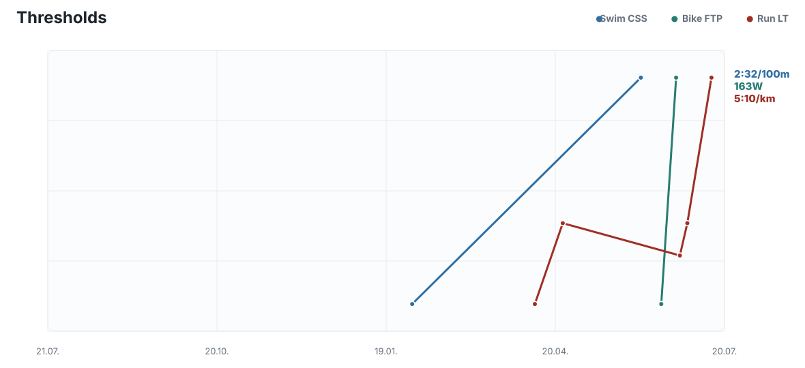
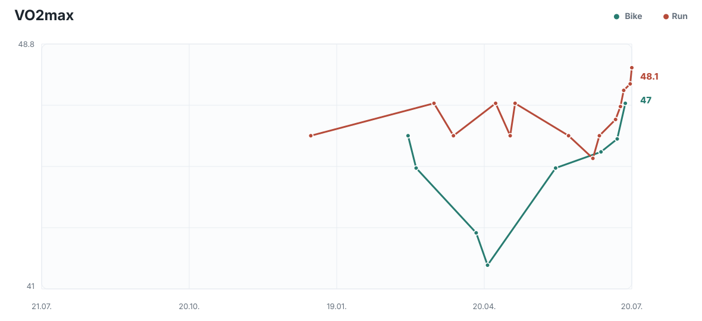
Belastung (90 Tage)
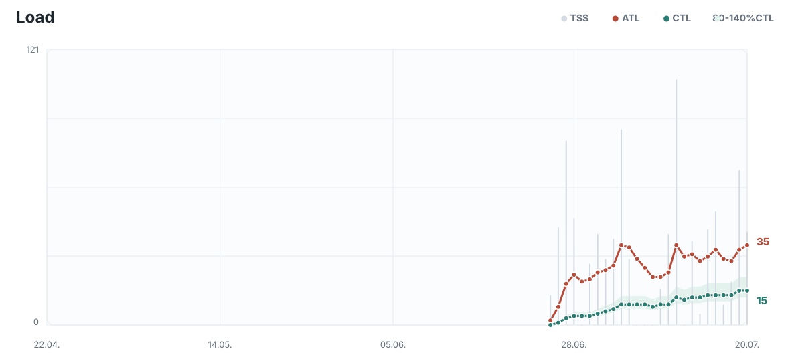
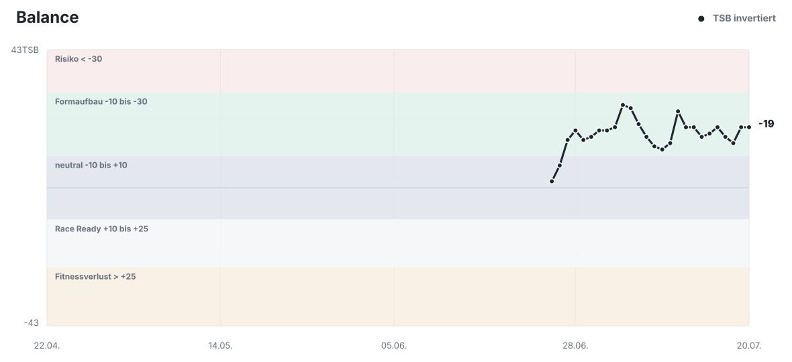
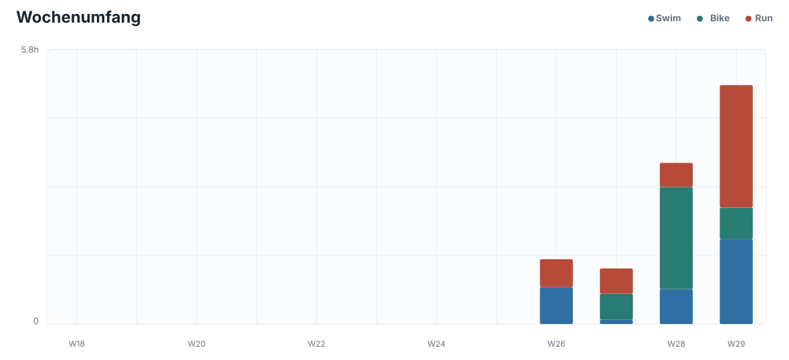
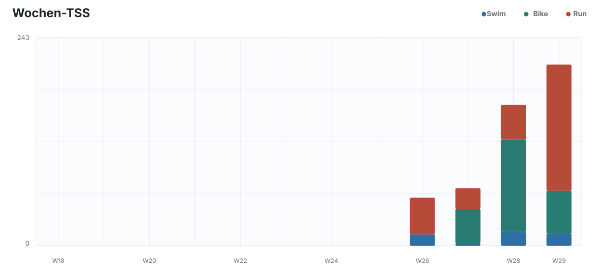
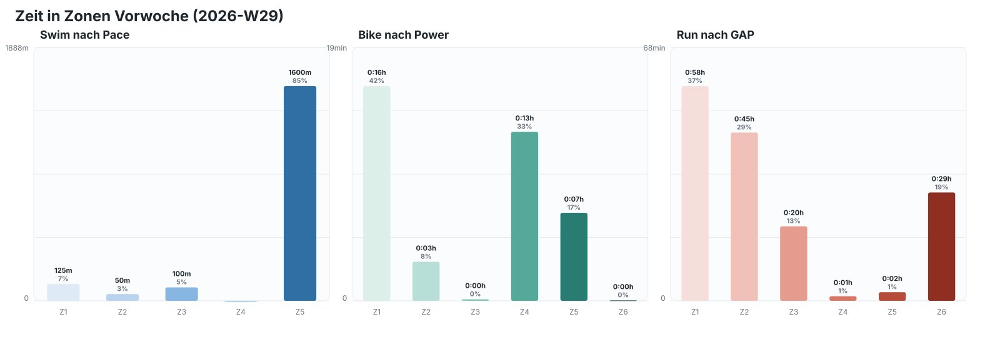
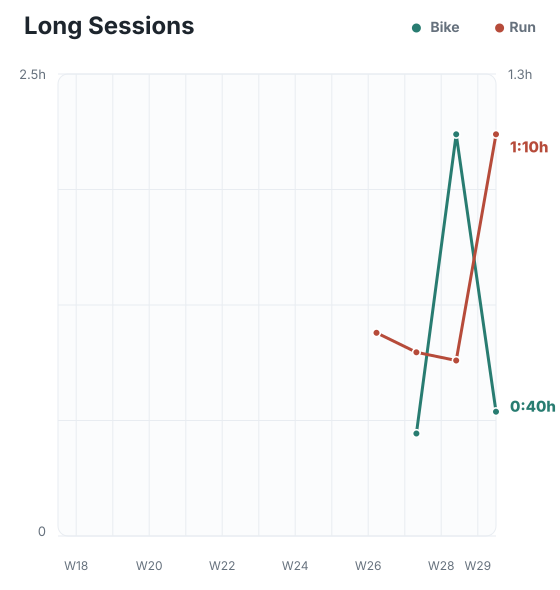
Readiness (90 Tage)
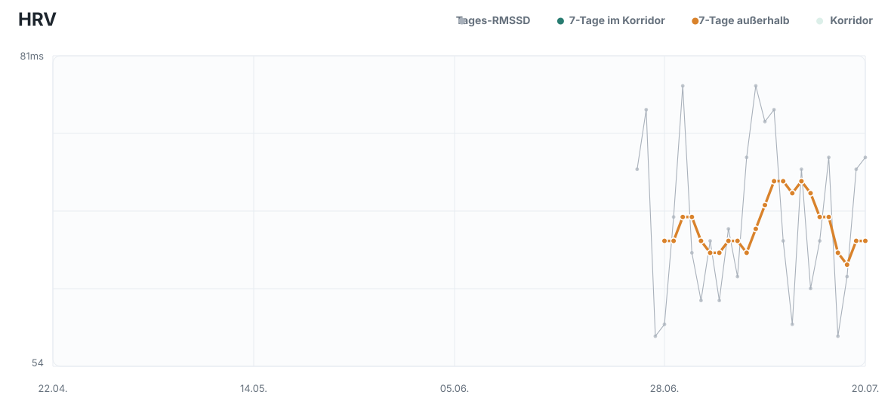
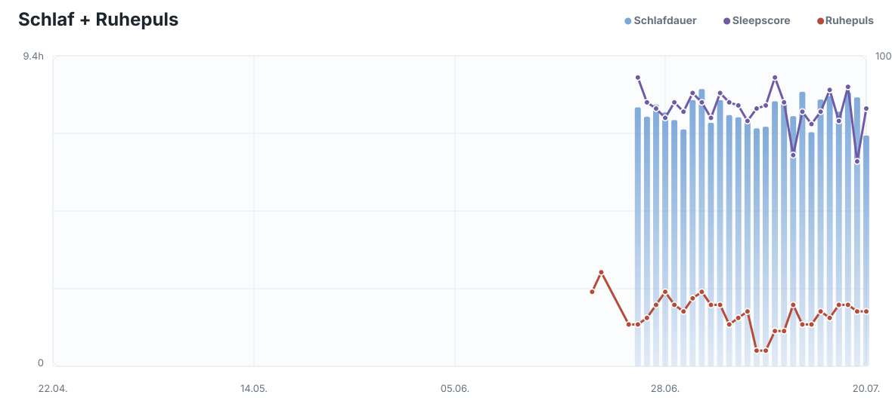
Alltag (90 Tage)
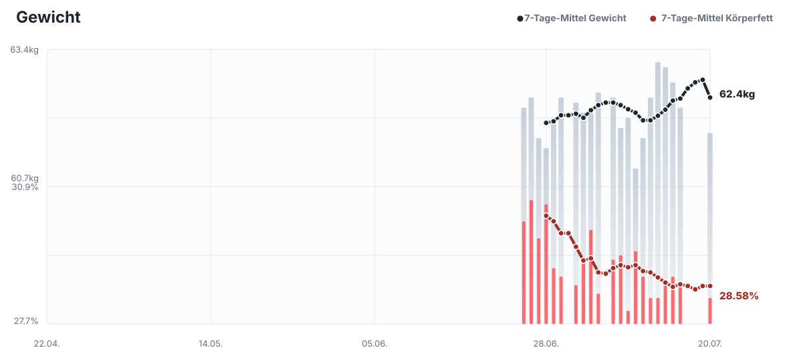
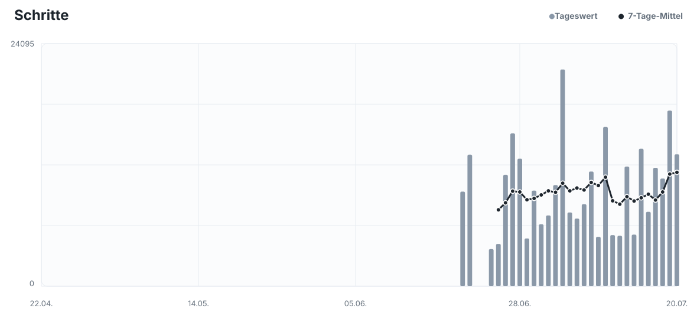